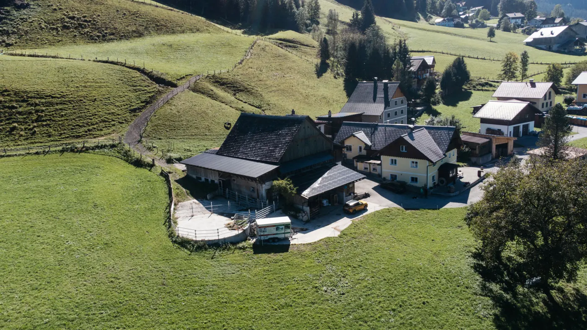
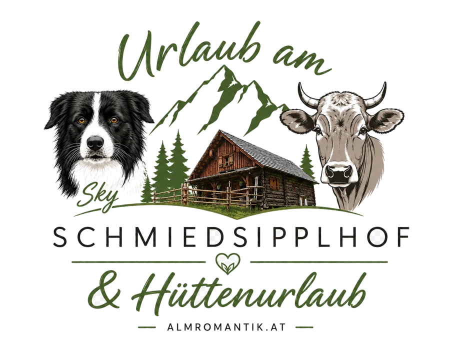
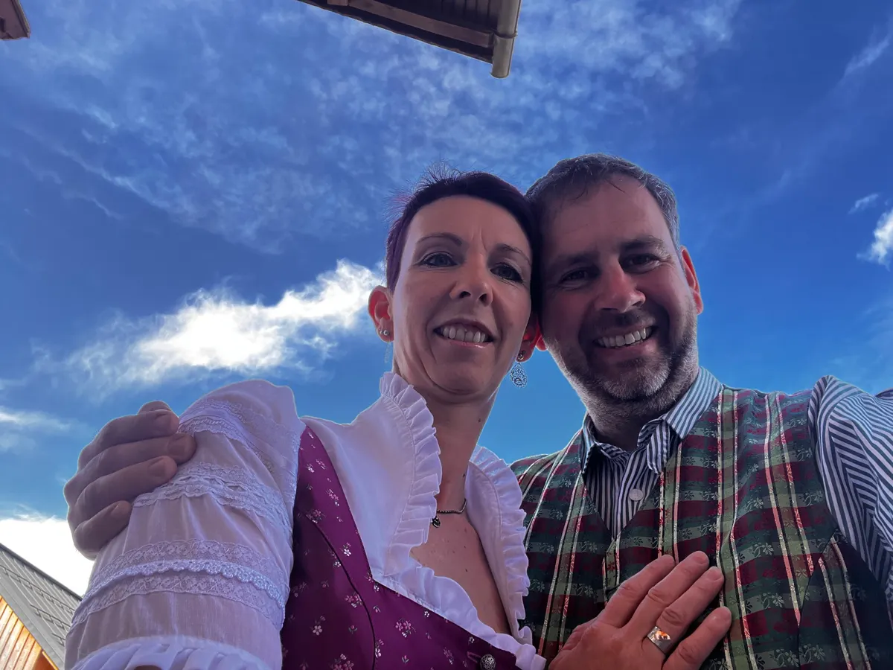

Schmiedsipplhof
Three holiday apartments on the farm with views of the Gosaukamm, animals to pet, a stone pine sauna and a playground. For families and groups of up to 25.


Gosau am Dachstein · Salzkammergut
Farm life with donkeys and a stone pine sauna, or a mountain hut all to yourself at 1,300 m – a holiday on the farm or up on the alp. Unique, sustainable, genuine.
Our holiday worlds
Three holiday apartments on the farm with views of the Gosaukamm, animals to pet, a stone pine sauna and a playground. For families and groups of up to 25.

Our self-catering hut in a secluded spot at 1,300 m. Wood-fired stove, barbecue area, starry skies and no neighbours for miles. For up to 6 guests.
Prefer modern and right in the village? You'll find our apartments at apartments-salzkammergut.at.


Certified Farm Holidays Austria member with 4 flowers. Awarded 5 out of 5 points in 2024 and 2025.
What our guests say
Genuine guest reviews via Farm Holidays Austria (TrustYou), as of October 2026. See all reviews
“We felt completely at home with you in Gosau […] A very beautiful apartment with lots of space […]”
“We had a wonderful stay in the Almheu apartment with our three children and our dog […] Overall, this is a fantastic place for a family stay, and we would be very happy to come back.”
“Quiet farm with a wonderful view of the mountains. Superbly equipped if you want to cook for yourself. Very clean, very friendly host. Great sauna.”

Farm life
Since 2015 we have run the Schmiedsipplhof as a suckler cow farm. The calves stay with their mothers, and in summer the cattle graze up on the alp. Living on the farm are Bella the horse, the donkeys Emma and Marie, ponies, Valais Blacknose sheep, runner ducks and cats. They all have names, and they all love visitors.
28.–29.December 2026
Giant slalom and slalom on the Hornspitz, just a few minutes' walk from the farm. If you want to be there, book now.
Holidays in the Salzkammergut
From our place you reach the region's most beautiful spots in minutes. Our tips for day trips and hikes.
The Schmiedsipplhof is for families and groups who want to be part of farm life: three holiday apartments with animals, a stone-pine sauna and views of the Gosaukamm. The mountain hut on the Schmiedsipplalm is for everyone who really wants to switch off: a secluded self-catering hut at 1,300 m with wood stove and barbecue.
Both are in Gosau am Dachstein, in the heart of the Salzkammergut World Heritage region. The Schmiedsipplhof is at Janslweg 22, a 10-minute walk from the Gosau Sommerhof bus stop. After collecting the key from us at Austraße 22, you drive about 20 minutes up to the mountain hut in your own car.
About 10 minutes by car to the Gosausee, 20 to Hallstatt, 30 to the Dachstein Krippenstein and 35 to Bad Ischl. The Hornspitz lift of the Dachstein West ski area is a 7 to 10-minute walk from the farm. For Hallstatt and the Gosausee the bus is worth it, as parking there is limited and charged.
Directly with us for the best price: online via 'Book now', using the enquiry form, by email to info@almromantik.at or by phone on +43 664 11 44 926.
Yes. From 3 nights you get the SalzkammergutCard free of charge, with up to 25% off cable cars, caves, boat trips, museums and more. The forms are available at the farm.
See available dates, calculate the price and book instantly. No enquiry, no waiting.
Our online booking is being set up. Until then, please book by phone or email.
Questions? Phone +43 664 11 44 926
info@almromantik.at

Questions before booking? Call or write to us.
Phone +43 664 11 44 926
info@almromantik.at
Janslweg 22, 4824 Gosau